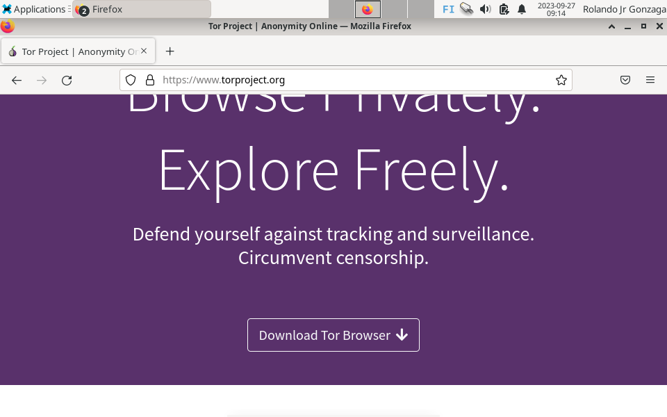
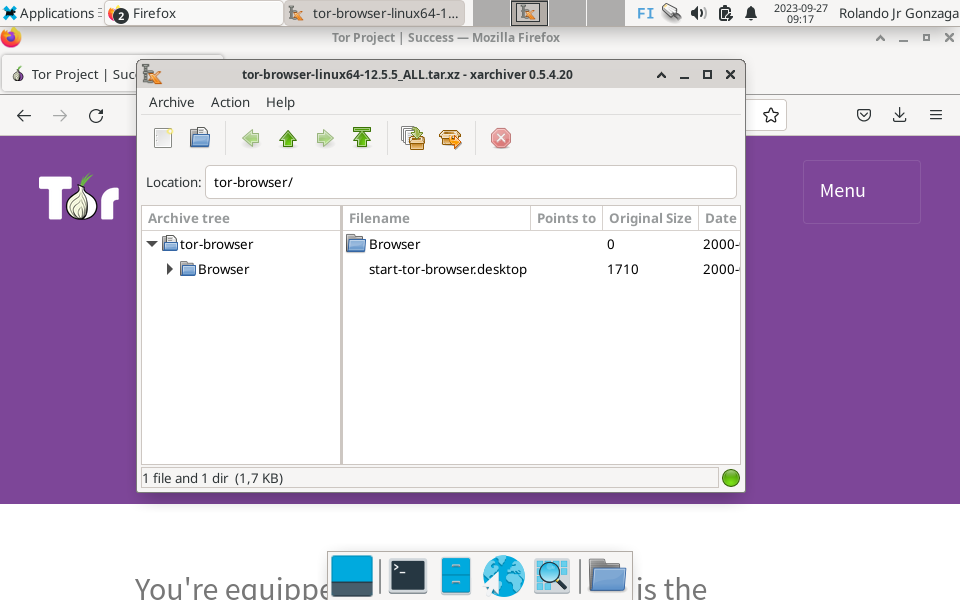
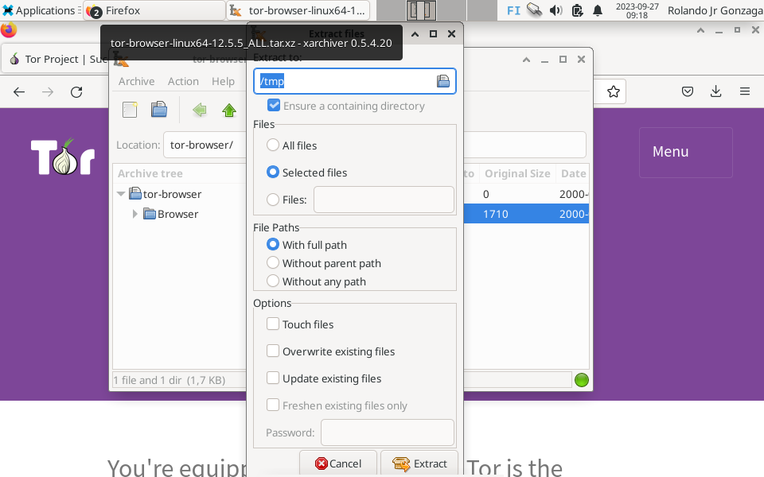

Hashcat Installation & Cracking
Step 1: Visit www.torproject.org, Click Download Tor Browser
TorWebsite">Step 2: Click the appropriate OS ( I selected Download for Linux)

Step 3: Downloading process

Step 4: Open the downloaded file/folder
Step 5: Extract and specify the location
Step 6: After extraction

Step 7: Execute the tor browser file